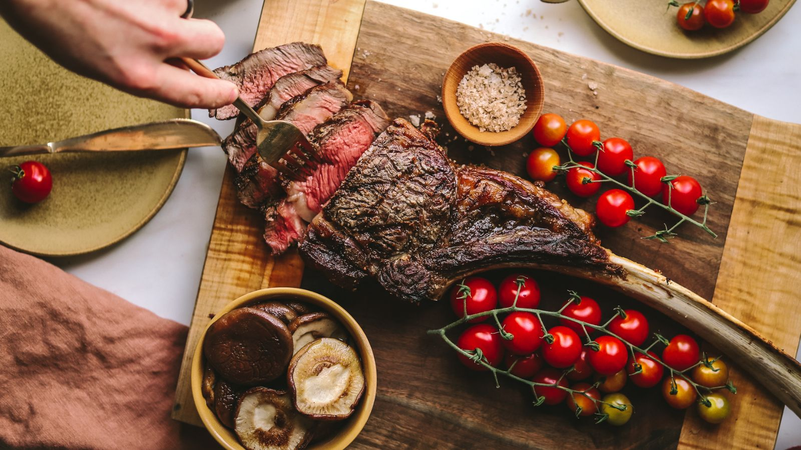

Steak Recipe

Description
This 20-minute recipe is done on the stovetop in one pan (no need to finish it in the oven). This is one of our favorite steak recipes and we make it year-round because it’s such a quick and convenient cooking method. That garlic butter is lip-smacking good!
Ingredients
- 2 pounds New York Strip/Ribeye/Top Sirloin steaks
- 0.5 tablespoons neutral oil
- 1.5 teaspoons salt
- 1 teaspoon black pepper
- 2 tablespoons unsalted butter
- 2 cloves peeled garlic
- 1 sprig fresh rosemary
Steps
- Thoroughly pat steak dry with paper towels. Just before cooking, generously season with salt and black pepper
- Heat the cast iron pan until hot then add oil over medium-high heat, swirling to coat. Once the oil is very hot, add steaks to the skillet.
- Sear the steaks on the first side for 4 minutes until a brown crust has formed then flip and cook another 3-4 minutes. Using tongs, turn the steak on its sides to render the white fat and sear the edges (1-minute per edge).
- Reduce heat to medium and add butter, quartered garlic cloves and rosemary to the pan. Spoon the butter sauce over the steak, tilting the pan to get butter on your spoon. Continue spooning the sauce over the steak until the steak is about 5-10 degrees from your desired doneness.
- Transfer steak to a cutting board, loosely cover and rest 10 minutes before slicing into 1/2" strips to serve. Spoon extra butter sauce over sliced steak to serve.
Recipes Home